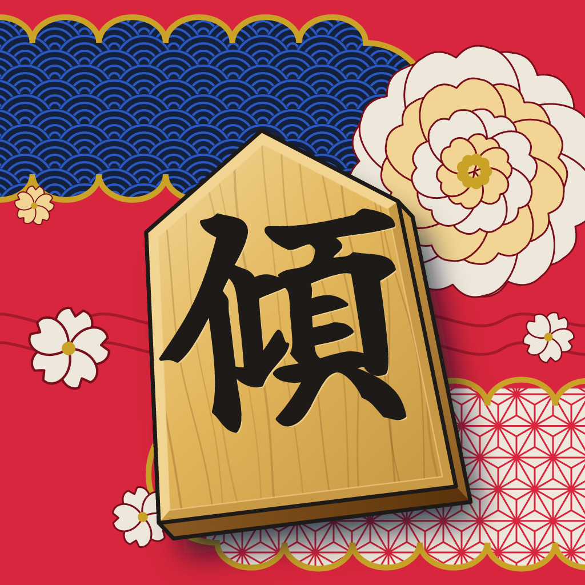
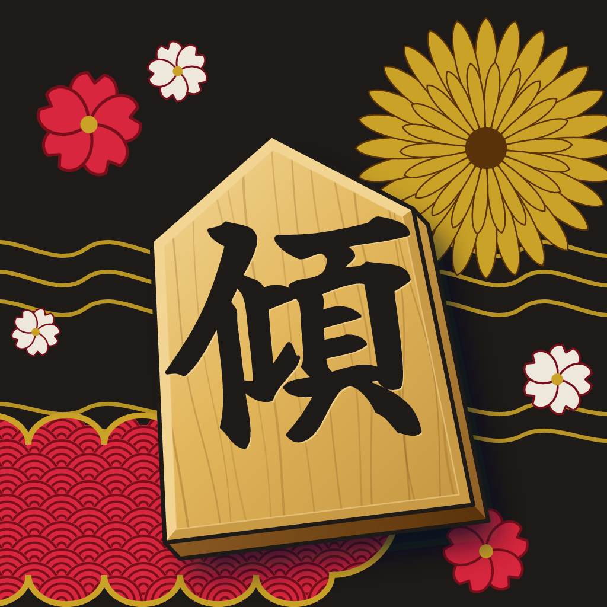
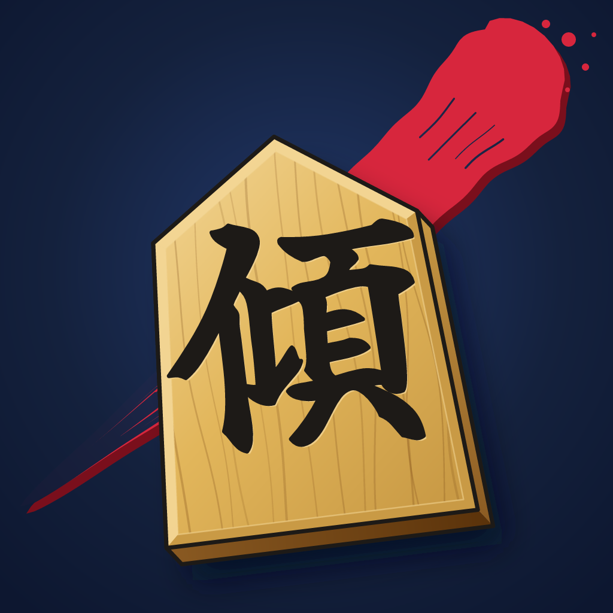

紅の振袖

紅の地に、藍の青海波と胡粉の麻の葉を金のふちの雲取りで区切り、胡粉の大輪の牡丹と桜を散らした。いちばん華やか。
黒の振袖

墨の地に金の流水と金の菊、紅と胡粉の桜、紅の青海波の雲取り。大人っぽく、駒の木の色がいちばん浮く。
いまの絵

夜の藍の地に紅の隈取の一筆。
駒と「傾」はそのままに、後ろの地を振袖の柄にした2案。下の灰色の帯は、ホーム画面に並んだときの大きさ（60px）。

紅の地に、藍の青海波と胡粉の麻の葉を金のふちの雲取りで区切り、胡粉の大輪の牡丹と桜を散らした。いちばん華やか。

墨の地に金の流水と金の菊、紅と胡粉の桜、紅の青海波の雲取り。大人っぽく、駒の木の色がいちばん浮く。

夜の藍の地に紅の隈取の一筆。